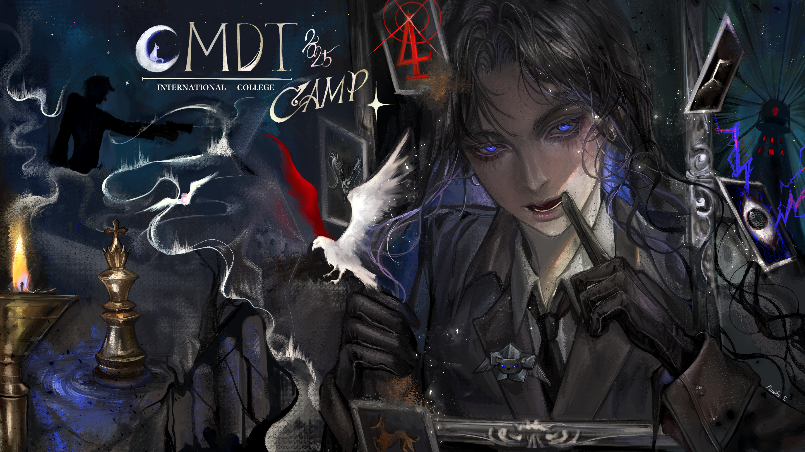
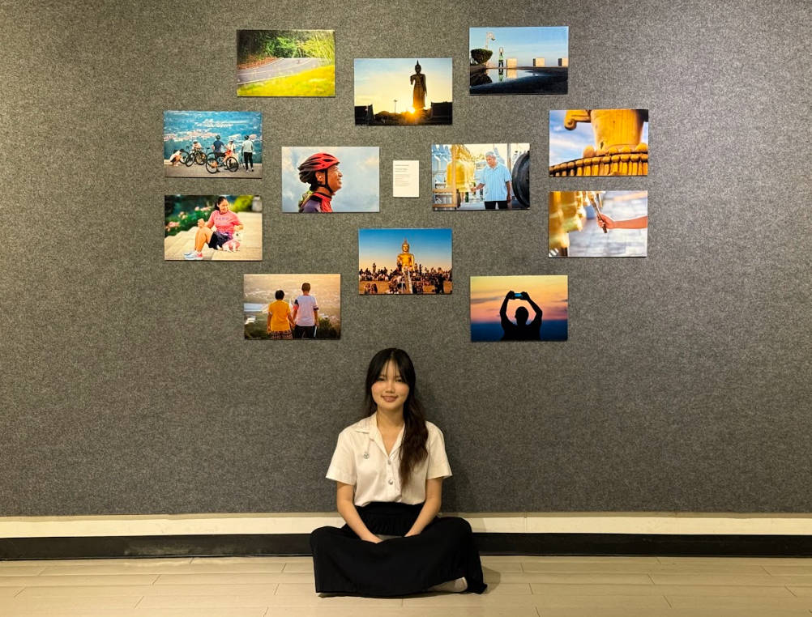

Projects
University works, creative activities & digital experiments.

CMDT Camp 4
Visual Design
Designed the key visual backdrops and stage graphics for CMDT Camp 4, a creative media and design camp organized at Prince of Songkla University. The project focused on building a cohesive visual identity that captured the camp's energetic and collaborative spirit — from main-stage banners to environmental signage.

Khao Kho Hong
The Place to
Relax
A mini photography exhibition exploring the serene landscapes and natural beauty of Khao Kho Hong. Through a carefully curated series of photographs, this project captures the quiet moments, golden light, and peaceful atmosphere that make this place a true escape — inviting the viewer to slow down and breathe.
More Works